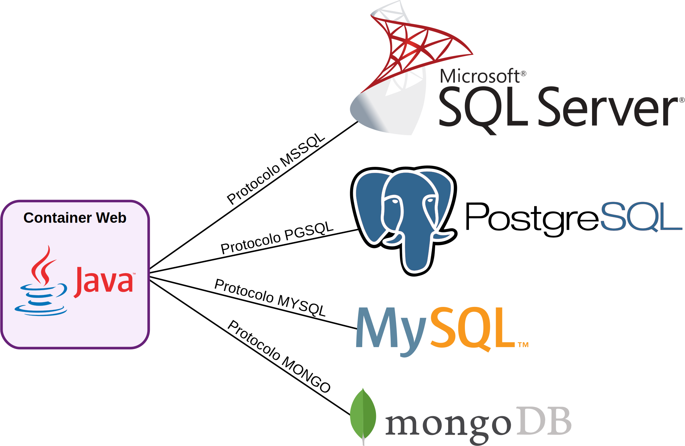

Memória do computador é volátil!
Os dados persistentes devem estar acessíveis pelo servidor a qualquer instante!
Protocolos de comunicação diferentes para cada SGBD
API da plataforma Java para acesso a banco de dados.
Linguagem utilizada nas operações realizadas com a maior parte dos sistemas gerentes de banco de dados.
Padrão SQL é um padrão ISO que define a linguagem.
SGBD relacionais são compatíveis com boa parte das instruções SQL definidas no padrão.
https://cursos.timtec.com.br/course/introbd/intro
SGBD relacionais são os mais comuns e usam a linguagem SQL.
SGBD não relacionais tem uma linguagem própria.
Por isso, também são chamados de NoSQL.